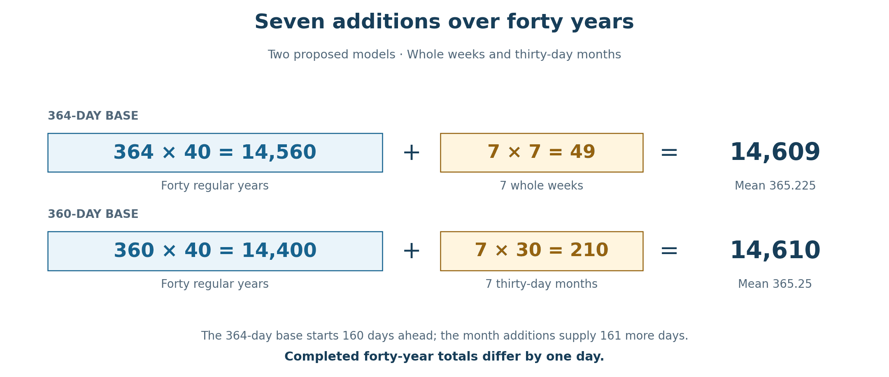
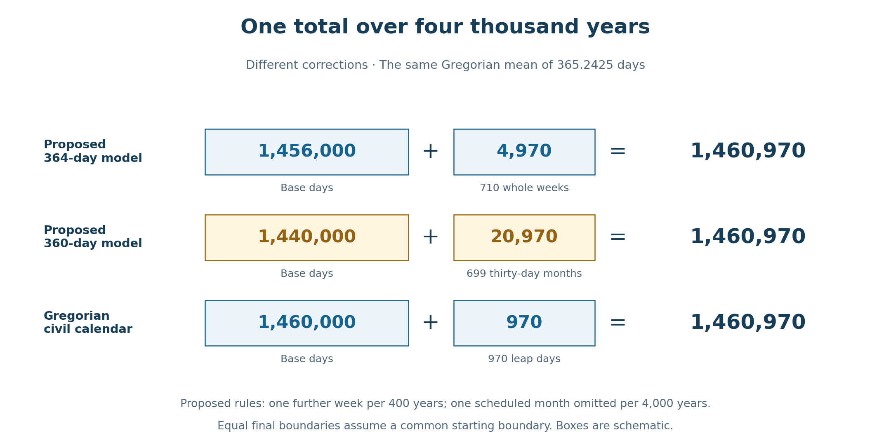

Book 1 · The Cross at the Center of Time · Chapter 7 of 18
Weeks, months, and years gathered toward Christ
And God said, “Let there be lights in the expanse of the sky to distinguish between the day and the night, and let them be signs to mark the seasons and days and years.”
— Genesis 1:14
The offerings of the previous chapter have brought two measures before us: 1,274 and 1,260. Each gives three and a half years in its own reckoning. One belongs to the regular 364-day year; the other to the common 360-day form. The altar has given the first of these a particularly tangible witness: 182 burnt animals at Tabernacles, repeated across seven annual feasts, produce 1,274.
I now follow this relationship beyond the three-and-a-half-year span—a half-week of years. How can years with different underlying counts approach the same seasons? What happens when the calendars make room for the days their regular forms do not contain? The answers lead through weeks, months, and much longer periods, with seven returning at several of the important turns.
Genesis places the heavenly lights within a world whose days have already begun. Their appointed service includes marking seasons, days, and years. I read that ordering beside John's testimony to the Word through whom all things came into being. The lights measure the times of creation; the Creator enters those times. Their service belongs within the larger purpose that I believe gathers creation into Christ.1
This does not require every calendar to use the same unit or begin at the same boundary. A week, a month, and a civil day can preserve different features of the world we inhabit. I want to examine how their differences can contribute to a common testimony, while letting the calculations show exactly where the agreement occurs.
In this chapter
Two measures of a half-week of years
The two regular years give the following products:
Table 1 — The half-week of years in two regular reckonings
| Basis | Three and a half years | Complete weeks |
|---|---|---|
| Common 360-day form | 1,260 days | 180 |
| Regular 364-day year | 1,274 days | 182 |
The difference is fourteen days, or two weeks:
1,274 − 1,260 = 14.
The same relation appears in their ratio. The years stand as 364 to 360, or 91 to 90. Their half-weeks retain that proportion: 1,274 to 1,260 is also 91 to 90.2
The 364-day count preserves thirteen complete weeks in each quarter. Four such quarters give fifty-two weeks in the year. The common 360-day form expresses the corresponding quarter as ninety days, retaining the twelve thirty-day months through which the biblical periods can speak together. Over fourteen quarters, the one-day difference per quarter becomes fourteen days.
These products count the regular forms. Additional seasonal adjustments, when a model includes them, require their own entries. This is the distinction already used in the festival paths of Chapter 5: the 1,274-day route was calculated without inserting further leap weeks into its stated interval. The larger adjustment models examined here do not retroactively place extra days inside that earlier example.
I therefore keep both half-weeks visible. The 1,274 gives the regular Enochian measure its full expression. The 1,260 gives the common prophetic measure. Their relationship is fruitful because the difference remains available for us to examine.
Keeping the feasts with the seasons
A regular year of 364 days has a conspicuous strength. Since 364 is divisible by seven, the next regular year begins on the same weekday. In the Wednesday-start arrangement considered earlier, the calendar's yearly festivals return to their appointed weekday positions. Jubilees makes this complete-week order central to its account of sacred time.3
The seasons introduce a further question. The astronomical year associated with their return is approximately 365¼ days, rather than 364. An unadjusted succession of 364-day years consequently moves through the seasons. A calendar intended to keep its festivals near the same seasonal places needs some means of addressing that difference.4
Whole weeks offer one possible adjustment unit. Adding seven days preserves the weekday on which the following regular year begins. It allows the calendar to retain its weekly architecture while changing its relation to the seasonal year. The mathematical advantage is clear, although the exact historical arrangements for making such corrections remain debated.5
These proposed leap weeks are additional to the four annual days that distinguish 364 from 360. The regular Enochian quarter is thirty, thirty, and thirty-one days. Its quarter-final day already belongs within the continuous week and within the 364-day total. A further week inserted for seasonal adjustment is a different provision.
The 360-day reckoning approaches the question through a different unit. Seven thirty-day additions across forty years bring its average to 365.25 days, the Julian mean. The Repository sets out this reconstructed scheme explicitly: six blocks of six years, followed by a final block of four years, with a thirty-day month closing each block.6
I use that scheme here beside a companion proposal for the 364-day year. The companion adds seven whole weeks over forty years. The comparison allows us to test what the two forms produce when the number of additions is shared and the size of the addition changes. The particular seven-week schedule and the longer corrections developed below belong to the model examined in this chapter. Enoch and Jubilees do not prescribe this complete procedure for us.7
Seven additions in forty years
Begin with forty regular years in each reckoning. The 364-day form supplies 14,560 days. The 360-day form supplies 14,400. The first therefore begins with 160 more days than the second.
Now give each form seven additions. In the 364-day model, seven weeks supply forty-nine days. In the 360-day model, seven thirty-day months supply 210 days.
Table 2 — Two proposed forty-year adjustment models
| Basis | Forty base years | Seven additions | Total days | Mean year |
|---|---|---|---|---|
| 364 days | 14,560 days | 7 weeks = 49 days | 14,609 | 365.225 days |
| 360 days | 14,400 days | 7 months = 210 days | 14,610 | 365.25 days |
The completed totals differ by one day. We can see why without rounding either result. The 364-day base contributes 160 extra days, while the seven months contribute 161 more days than the seven weeks:
40 × (364 − 360) = 160.
7 × (30 − 7) = 161.
The larger adjustment overtakes the larger starting total by one day. That is the precise relation behind the near meeting of the two forty-year cycles.


The figures are exact totals for the proposed models. Seven weeks add forty-nine days; seven months add 210. The common number of additions does not make their day totals identical.
A possible placement closes years 6, 12, 18, 24, 30, 36, and 40 with the chosen addition. The sequence contains six six-year blocks and one four-year block. In the 360-day model, each completed six-year block gives:
6 × 360 + 30 = 2,190 days = 6 × 365.
The final four-year block gives:
4 × 360 + 30 = 1,470 days = 30 × 49.
Together they give 6 × 2,190 + 1,470 = 14,610 days. The forty-year mean is therefore exactly 365.25. Within this construction, six ordinary blocks lead to a seventh that has its own length and its own forty-ninefold expression.
I find that form worth contemplating. Six returns establish the rhythm; the seventh brings the forty-year count to its closure. The resemblance to the biblical movement from six to seven contributes to my reading of the pattern. The calculation supplies its visible shape; the theological meaning is the understanding I bring to that shape in the light of Scripture.
The listed years are positions within a model. They do not by themselves give its historical epoch or tell us where an ancient community inserted a week or month relative to a feast. Those matters would be needed before assigning one of these schedules to a particular historical interval. For the comparison here, the adjustment totals and their declared placement are sufficient.
The longer corrections
The near agreement over forty years invites a longer comparison. The two preliminary means approach the Gregorian mean from opposite sides: 365.225 is lower, while 365.25 is higher. The received civil calendar's mean is exactly 365.2425 days.8
For the 364-day model, repeat the forty-year cycle ten times:
10 × 14,609 = 146,090 days.
One additional whole week then gives:
146,090 + 7 = 146,097 days.
Dividing by four hundred years produces 365.2425 days per year. The complete four-century scheme contains seventy-one added weeks: seventy from the ten ordinary cycles, and one further week at their completion. If the further week is placed at the end of year 400, it accompanies that year's normally scheduled week, giving two added weeks at that boundary.9
For the 360-day model, repeat the forty-year cycle one hundred times:
100 × 14,610 = 1,461,000 days.
Omitting one scheduled thirty-day month gives:
1,461,000 − 30 = 1,460,970 days.
Dividing by four thousand years again produces 365.2425 days per year. Seven hundred scheduled months have become 699. The larger correction therefore changes the original seven-per-forty rhythm at its stated long-period boundary.
The Gregorian calendar reaches the same mean by adding individual days. Its rule gives ninety-seven leap days in four hundred years: ordinary four-year leap days are retained, except that century years must be divisible by four hundred to remain leap years. Its total is 400 × 365 + 97 = 146,097 days. A forty-year span that includes a suppressed century leap day need not contain the ten leap days found in an ordinary forty-year Julian span.8
The agreement becomes especially clear when all three constructions are displayed over four thousand years.
Table 3 — The same total over a common comparison period
| Framework | Base days in 4,000 years | Added days | Final total |
|---|---|---|---|
| Proposed 364-day model | 1,456,000 | 710 weeks = 4,970 | 1,460,970 |
| Proposed 360-day model | 1,440,000 | 699 months = 20,970 | 1,460,970 |
| Gregorian calendar | 1,460,000 | 970 leap days | 1,460,970 |


The 364-day and 360-day rows are proposed constructions; the Gregorian row follows its established civil rule. Their equal totals would reach the same final boundary if they began at the same boundary. Their intermediate dates and seasonal positions would still follow their respective schedules.
This is the convergence I want to retain. Simple corrections, expressed in the units appropriate to each form, can bring their long-period day totals into exact agreement. I have used the Gregorian mean as the target of this comparison. The calculations show how the two proposed models can reach it; they do not establish that ancient calendar makers independently used these same corrections.
The target also needs its proper name. 365.2425 is a civil calendar mean. The astronomical year is a physical interval whose precise length depends on the kind of year measured and the epoch. The approximately 365.2422-day seasonal reference used elsewhere in the Repository remains distinct, as do its more specialized calibration ratios. The present construction does not replace them.10
Four, forty, four hundred, and four thousand offer useful scales at which to follow the adjustments. The succession enlarges by tens, but the corrections at those scales retain their own rules. The Gregorian calendar, in particular, is not governed by the proposed seven-in-forty schedule. Its participation in the comparison lies in the common mean reached by its different mechanism.
The moon keeps another count
The moon contributes a further sevenfold relation. A lunisolar calendar must retain months associated with the moon while allowing the year to remain near its appointed season. Twelve lunar months fall short of a seasonal year, so additional months are needed within a longer cycle.
In the nineteen-year cycle used by the fixed Jewish calendar, twelve years have twelve months and seven have thirteen. The total is:
19 × 12 + 7 = 235 months.
The same total can be written 12 × 12 + 7 × 13 = 235. Seven added months let nineteen calendar years contain the 235 lunar months that approximate nineteen seasonal years.11
The seven here belongs to nineteen years, rather than forty. Its months also follow a different principle from the thirty-day units of the proposed 360-day model. A lunar month preserves the moon's changing relation to the sun; the schematic thirty-day month supplies the common numerical form used throughout this book. Both are meaningful, with different questions to answer.
The modern fixed cycle is useful for showing the relationship. It does not recover the actual intercalation decisions made in the Passion year. The earlier chapters have already distinguished observed crescents, accepted testimony, administrative decisions, and later calculated rules. The nineteen-year comparison can join the inquiry without resolving those earlier historical questions by itself.12
The cycle is commonly called Metonic. Its approximation is close, but lunar phases and the seasons do not return in a perfectly exact nineteen-year lock. The traditional term Golden Number identifies a year's position from one to nineteen within the cycle. It is not the name of the fraction 235/19.13
What draws my attention is the recurrence of seven within a framework that preserves the moon's own contribution. Seven months in nineteen years and seven additions in the proposed forty-year models are distinct arrangements. Their differences allow us to see more than the repetition of a number: each arrangement addresses a real relation between the count being kept and the world through which it moves.
The Jewish lunisolar tradition, the fixed-week witness preserved in Enochian literature, and the Roman Julian tradition therefore remain recognizable. The later Gregorian calendar adds another received human ordering of time. I believe God's sovereignty can encompass these inherited practices as well as the celestial motions to which people sought to relate them. Their historical development is part of the field in which providence may be contemplated.
Seven and the purpose of the count
Seven already has a scriptural setting before we consider any leap cycle. The creation week leads toward Sabbath rest. Israel counts complete weeks to the Feast of Weeks. Leviticus counts seven sabbaths of years, forty-nine years, in its approach to the Jubilee. The recurring form joins work, worship, release, and return.14
That setting gives the calendar comparison its theological depth for me. In the 364-day year, every quarter and every regular year preserve complete weeks. In the forty-year companion model, seven added weeks contribute forty-nine days. In the 360-day model, seven added months bring forty years to the Julian mean. The lunar cycle carries seven added months within nineteen years. I see these relations as further occasions to consider the Creator's ordering of the times.
The units remain important. The Gregorian ninety-seven leap days do not become seven, and the lunar nineteen-year cycle does not become forty. The gathering I seek allows each witness to arrive with the particular measure it carries. Their relation can be providential without requiring every human calendar to follow one universal intercalation law.
The same care helps us hear the prophetic periods. Daniel gives the half-week language of “a time, and times, and half a time,” together with the later numbered periods of 1,290 and 1,335 days. Revelation explicitly gives 1,260 days, forty-two months, and the related time-language. The common 360-day form makes the relation between forty-two thirty-day months and 1,260 days readily visible. The regular Enochian half-week supplies its companion count of 1,274.15
I read the two forms together because Scripture's testimony is larger than one calendar's customary expression. The 364-day witness brings its complete weeks and seasons. The 360-day form brings its clear numerical language. The lunar reckoning brings months that must keep returning to the heavens for their meaning. Human traditions preserve and transmit these measures, often amid disagreement about the appointed day.
John's Gospel has already brought us to such a place. The meal, the sacrifice, the Sabbath, the night, and the approaching dawn surround one Passion. I am trying to follow his sight as these particulars gather around Christ. The longer calendar comparisons do not settle the practical circumstances of the two proposed Nisan beginnings. They help me contemplate a wider possibility: that distinct measures can receive a common fulfillment while preserving the contribution of each.
The harmony receives its center
From our human vantage, a calendar begins with what can be observed and counted. We watch a light return, number the days, and decide how to preserve the relation between the count and the season. The mathematical forms then become traditions in which later generations live.
From the perspective I am seeking through John, the Word stands before the lights and enters the world they measure. I believe their deepest harmony may receive its order from His completed work. The Cross could be the actual center from which that order reaches into the past and the future, so that earlier patterns already bear the imprint of their fulfillment.16
I mean to retain the substance of that possibility. The Cross may act upon creation and time themselves, beyond the limits of what we can compare through ordinary observation. The calendar relationships provide visible forms through which I approach that conviction. An equal long-period total measures a relationship among stated counts; the divine action I envisage reaches beyond what that equality can disclose.
This lets the inquiry move with both confidence and reverence. I can follow an addition exactly, identify the point at which two totals meet, and recognize that the work of Christ remains greater than the count. I can also receive a human tradition as one of the things gathered within God's purpose, even where its history includes uncertainty and its calendar includes decisions made long after the Passion.
The weeks, months, and years bring us back to the larger question that grew from our opening Passover problem: how might all things be brought together in Christ? Their harmony matters because He is their center. As I seek to rise on the eagle's wings, the calculations become ways of attending to that larger testimony, each exact relation directing my gaze toward the One in whom I believe the times find their meaning.
The next chapter follows that gaze from the calendar to a particular count in John's Gospel: the 153 fish drawn ashore before the risen Lord. Peter, who asked about sevenfold forgiveness, will stand within a scene where abundance and restoration meet.17
There we will examine 77 × 153 = 11,781 beside the inclusive day count supplied by this book’s received chronology, from January 1, AD 1, through the Julian date April 3, AD 33. Their full window runs from January 1, AD 1 at 00:00 to April 4, AD 33 at 00:00: 11,781 complete days, or 1,683 weeks. It includes all of Crucifixion Friday and closes at the midnight that ends it. Chapter 8 will explain the received dates and why the count includes both the first and last date. The question becomes more intimate: can the number in the net help us contemplate the days of the One who calls His disciple to follow Him?18
Sources and notes
1. Genesis 1:14; John 1:1–5; Ephesians 1:9–10. The Genesis quotation follows the Berean Standard Bible. The chapter's Christological reading follows the first-person perspective established in Chapters 1–6. Return to text
2. File 58, §§4.4–5.1; File 12, §§6.3.4 and 8.2; File 17, §§12.1–12.2. The regular products are 3½ × 360 = 1,260 and 3½ × 364 = 1,274; dividing by seven gives 180 and 182 weeks. Both ratios reduce to 91/90. Further leap insertions are outside these base products. Return to text
3. Jubilees 6:30–38; File 20, §6H. The regular calendar is 4 × (30 + 30 + 31) = 364 = 52 × 7. The Wednesday-start arrangement is the calendar setting adopted in the preceding chapters; historical communities and their particular boundary practices require their own source control. Return to text
4. U.S. Naval Observatory, “Leap Years”. The modern approximate seasonal reference is about 365.2422 days; 365¼ is a convenient rough description in the body. Calendar means and astronomical year lengths are different quantities. Return to text
5. Ron H. Feldman, “The 364-Day ‘Qumran’ Calendar and the Biblical Seventh-Day Sabbath”, Henoch 31.2 (2009), 342–365, especially 343 and note 4, discusses the lack of clear evidence and differing whole-week intercalation proposals. The present chapter does not adopt his separate hypothesis concerning Nehemiah. Whole-week additions preserve the weekday because their day count is divisible by seven. Return to text
6. File 12, §7A.1; File 00, §§3.10 and 7.3. The canon explicitly treats the forty-year 360-day scheme as reconstructed: 6 × (6 × 360 + 30) + (4 × 360 + 30) = 14,610 = 40 × 365.25. The arithmetic is exact; the scheme is an author-declared construction rather than an ancient text's express regulation. Return to text
7. The companion seven-week/forty-year model and the four-century and four-millennium corrections are proposals examined in this chapter. The Repository registers the basic forty-year 360-day construction; the additional rules here do not change its calendar definitions. The listed insertion years mean additions at the ends of years 6, 12, 18, 24, 30, 36, and 40. Their epoch and relation to named ancient feasts are not specified by the sums. The annual four quarter-final days in 364 remain distinct from these additional correction weeks. Return to text
8. U.S. Naval Observatory, “Leap Years”. In 400 Gregorian years, 100 four-year leap positions lose three century exceptions, leaving 97 leap days. Thus (400 × 365 + 97) ÷ 400 = 365.2425. The corresponding Julian mean is 365.25. Gregorian forty-year intervals need not all have the same leap-day count. Return to text 1 · Return to text 2
9. The 364-day construction has 10 × 7 + 1 = 71 leap weeks in 400 years. Its total is 400 × 364 + 71 × 7 = 146,097 days. Repeated ten times it has 710 added weeks in 4,000 years. The 360-day construction has 100 × 7 − 1 = 699 added months in 4,000 years: 4,000 × 360 + 699 × 30 = 1,460,970. The preliminary total before omitting the month is 1,461,000. The two revised schedules share the preliminary seven-in-forty pattern but have different long-period correction rules. Return to text
10. File 12, §§5.1–5.1A and 7A.2 distinguishes Enochian, prophetic, Julian, and solar calibration states. The Gregorian-mean constructions here do not replace the canon's tropical reference, its dominant or supportive rational standards, its Key-of-23 conversions, or its Julian phase-coordinate proofs. No exact Gregorian mean is asserted as an unchanging astronomical constant. Return to text
11. U.S. Naval Observatory, “The Jewish Calendar”. The fixed nineteen-year calendar has twelve common years and seven leap years, totaling 235 months. Its current leap positions are years 3, 6, 8, 11, 14, 17, and 19. The cycle's months are lunar calendar months, not uniformly thirty-day months. Return to text
12. The later fixed calendar does not independently determine first-century crescent sightings or intercalation decisions. Compare the observational and calculated-calendar distinction in the Naval Observatory's Jewish calendar account, and the specific AD 33 qualifications retained in Chapters 2, 4, and 5. Return to text
13. U.S. Naval Observatory, “Introduction to Calendars”, explains the Metonic approximation and the Golden Number as the year-index within the cycle. The latter is distinct from the months-per-year fraction 235/19 and from the mathematical golden ratio. Return to text
14. Genesis 2:1–3; Leviticus 23:15–16; Leviticus 25:8–10. Seven sevens of years produce 49; Leviticus then separately names the fiftieth year. The comparison here retains that distinction rather than silently making the two ordinal expressions identical. The septenary calendar correspondences are interpreted providentially. Return to text
15. Daniel 7:25; 9:27; 12:7, 11–12; Revelation 11:2–3; 12:6, 14; 13:5. The explicit 1,260-day notices are in Revelation. Daniel's half-week and time-language provide the related interpretive setting. The textual starting conditions of the various passages remain distinct. Return to text
16. John 1:1–5; Ephesians 1:9–10; Colossians 1:16–17; File 00, §0.6. The proposed action of the Cross upon time is the author's theological hypothesis. The biblical texts supply the Christological setting, while the calendar calculations establish the stated numerical relationships. Return to text
17. John 21:1–19; Matthew 18:21–22. The BSB renders Christ's reply “seventy-seven times,” with “seventy times seven” as its alternative. The relation of this teaching to the 153 fish and the adopted life-count is the reading developed in the following chapter. Return to text
18. The preview uses January 1, AD 1, as the received circumcision datum adopted in Chapter 4, with the Julian Passion date April 3, AD 33. At the same time of day the interval is 11,780 elapsed days, or 11,781 civil dates when both endpoints are included. Thus 77 × 153 = 11,781. Their full window runs from January 1, AD 1 at 00:00 to April 4, AD 33 at 00:00: 11,781 complete days, or 1,683 weeks. It includes all of Crucifixion Friday and closes at the midnight that ends it. The inclusive result does not give an exact birth-to-death duration or establish the actual clock time of the circumcision. Those premises and the fuller Johannine comparison belong to Chapter 8. Return to text
Scripture quotations are from the Berean Standard Bible (BSB), public domain. Jubilees references use R. H. Charles's public-domain translation.